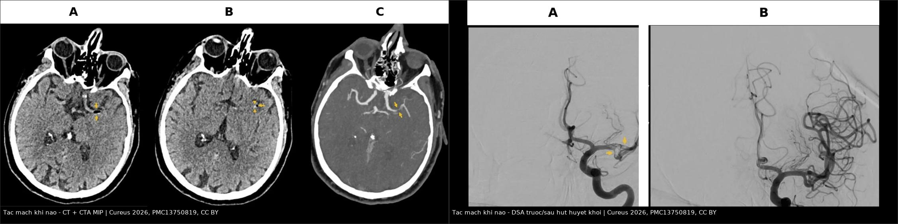
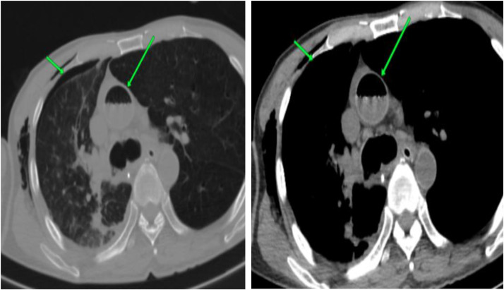
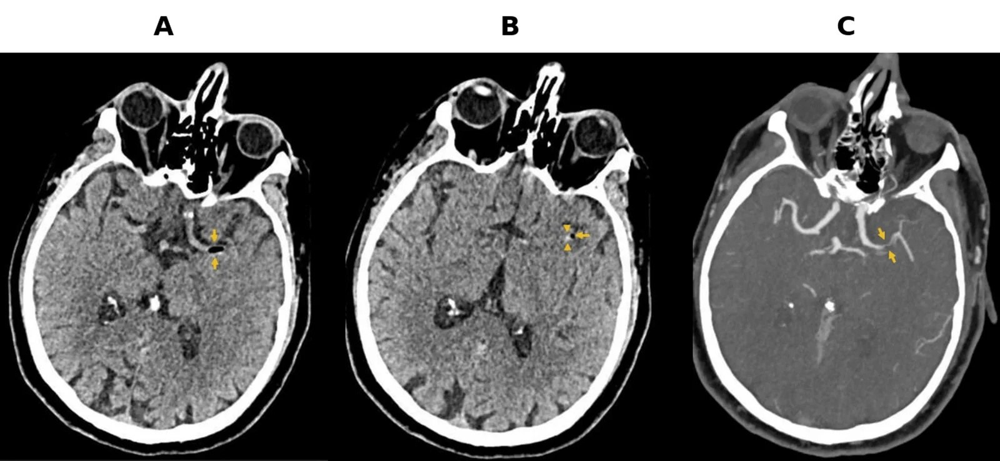
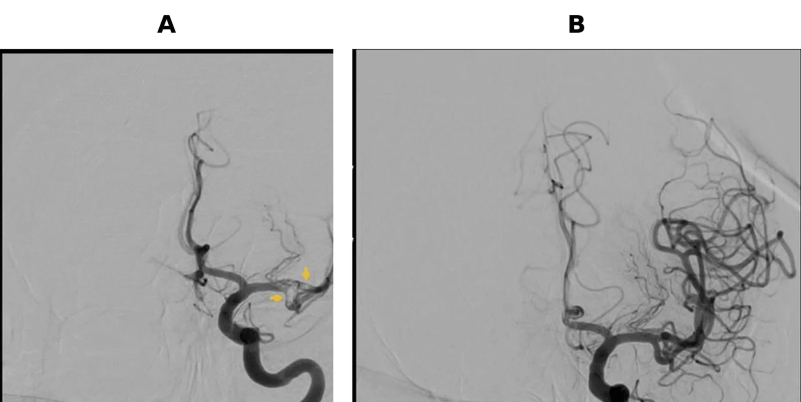

3123 — Tắc mạch khí y sinh (iatrogenic systemic air embolism): khí trong tim trái/động mạch chủ, nhồi máu não tính bằng phút
Tags: pattern:khi-trong-long-mach pattern:hoi-chung-that-thuong-nao pattern:khuyet-thuoc-dong-mach vung:nao vung:nguc anatomy:dong-mach-chu anatomy:dong-mach-nao protocol:CT-nguc protocol:CT-so-nao protocol:DWI score:GCS
Mức chắc chắn (certainty): tổng hợp y văn (literature synthesis) — ghép hai ca nguyên văn có ảnh: sinh thiết phổi xuyên thành qua CT → khí trong động mạch chủ lên, tử vong (Radiol Case Rep 2026, PMC13022666); nội soi phế quản định vị → khí trong động mạch não giữa trái, lấy huyết khối hút nhưng di chứng nặng (Cureus 2026, PMC13750819); cộng một tổng quan hệ thống 53 ca có số liệu dịch tễ – điều trị (Front Med 2026, PMC13050928) và một tổng quan hình ảnh can thiệp. Không có ca do nhóm tự chụp.
Câu hỏi thực hành: nam 68 tuổi, tiền sử khí phế thũng nặng, nội soi phế quản định vị + sinh thiết xuyên thành thùy dưới phải. Ngay sau lần lấy bệnh phẩm thứ 5: nhịp chậm 38 lần/phút, huyết áp 58 mmHg, rồi không tỉnh lại sau mê. Câu hỏi: tai biến gây mê, hay tắc mạch khí — và chụp gì trong 30 phút tới? Bài chốt ba quyết định: (1) tụt huyết áp + nhịp chậm + không tỉnh ngay sau thủ thuật xuyên phổi = tắc mạch khí cho tới khi chứng minh ngược; (2) CT sọ không cản quang là cửa đầu nhưng độ nhạy chỉ ~40% — âm tính không loại trừ, chụp lại trong 6 giờ; (3) 100% O₂ + tư thế + HBO là điều trị, không phải "theo dõi" — và tràn khí màng phổi chưa xử lý là chống chỉ định tuyệt đối của HBO.
1. Tổng quan bệnh học – cơ chế hình ảnh: vì sao bọt khí 1 mL cũng đủ gây đột quỵ
- Tần suất — bốn con số cần nhớ:
- Tắc mạch khí hệ thống sau can thiệp phổi qua da: 0,02–0,06% (Radiol Case Rep 2026, PMC13022666).
- Tắc mạch khí não trong can thiệp phổi: 0,02–0,4%, tử vong 20–30% (Front Med 2026, PMC13050928 — tổng quan 53 ca, 2001–2024).
- Trong 559 ca sinh thiết phổi xuyên thành: tràn khí màng phổi 9–54% (trung bình ~20%), và 4,8% trong số đó có tắc mạch khí hệ thống (Monnin-Barres, dẫn trong PMC13022666).
- Vị trí khí thường gặp nhất sau sinh thiết: thất trái (89,5%), và phần lớn không triệu chứng — tức là khí trong tim trái có thể im lặng cho tới khi nó đi lên não (Liu & Fu, dẫn trong PMC13022666).
- Ba đường vào (quyết định cách phòng và cách đặt tư thế):
- Đường động mạch trực tiếp: kim/ catheter chọc trực tiếp vào tĩnh mạch phổi hoặc tạo rò động–tĩnh mạch phế nang (alveolar–venous fistula) khi một lần kim xuyên cả phế nang và tĩnh mạch phổi → khí vào tĩnh mạch phổi → nhĩ trái → thất trái → động mạch chủ → não. Ho + tăng áp lực đường thở đẩy khí vào nhanh hơn.
- Đường tĩnh mạch → động mạch (nghịch thường): khí vào hệ tĩnh mạch với lượng vượt ngưỡng lọc của mao mạch phổi ~0,40 mL/kg/phút, hoặc qua lỗ bầu dục mở (PFO) khi áp lực nhĩ phải tăng.
- Đường tĩnh mạch ngược dòng: bơm khí nhanh, áp lực cao vào tĩnh mạch cổ khi bệnh nhân ngồi/nửa ngồi → bọt khí nổi ngược lên xoang tĩnh mạch nội sọ.
- TẠI SAO khí gây nhồi máu chứ không chỉ "bịt ống": tại mặt tiếp xúc khí–máu, phản ứng viêm–huyết khối qua bổ thể làm tổn thương nội mạc, hoạt hóa tiểu cầu, tăng đông → hình thành huyết khối tại chỗ cạnh bọt khí. Ca PMC13750819 cho thấy đúng điều này: khí và vật liệu huyết khối nằm cạnh nhau trong động mạch não giữa, và hút ra được cả hai.
- TẠI SAO CT thấy khí — và tại sao có thể KHÔNG thấy: khí có tỷ trọng khoảng −1.000 HU, tương phản cực mạnh trên cửa sổ nhu mô/não. Nhưng bọt rất nhỏ, di chuyển, hoặc bị "pha loãng" theo dòng → độ nhạy CT sớm chỉ khoảng 40%; vì vậy CT âm tính đầu tiên không loại trừ và phải chụp lại trong 6 giờ (PMC13050928).
- TẠI SAO MRI DWI đến muộn hơn: DWI phản ánh phù độc tế bào của vùng nhồi máu, không phản ánh bọt khí; tổn thương chấm/đốm hạn chế khuếch tán xuất hiện trong 6–24 giờ sau khởi phát (PMC13050928). Vì vậy MRI không phải cửa cấp cứu, nhưng là cửa xác định mức lan và tiên lượng.
- TẠI SAO hình ảnh não mang tính "nhiều ổ, hai bên, không đối xứng": khí đi theo dòng, phân bố nhiều nhánh ở vỏ não vùng trán–đỉnh; không tôn trọng một lãnh thổ mạch như huyết khối xơ vữa.
2. Mẫu hình + chẩn đoán phân biệt theo vị trí khí (Gamut)
- Mẫu hình cốt lõi: biến cố tức thì trong hoặc ngay sau thủ thuật (rút kim, bơm khí, đốt u) + tụt huyết áp/nhịp chậm/không tỉnh + khí thấy được trong lòng mạch trên CT.
- Gamut theo vị trí khí:
- Thất trái / động mạch chủ lên → tắc mạch khí hệ thống (nguồn đi não, mạch vành, thận, chi). Ca PMC13022666: khí trong động mạch chủ lên + tràn khí màng phổi.
- Động mạch não (thường MCA) → tắc mạch khí não: liệt nửa người, mất ngôn ngữ, cơn động kinh, hôn mê. Ca PMC13750819.
- Tĩnh mạch nội sọ / xoang → tắc mạch khí tĩnh mạch não: đau đầu, lú lẫn, co giật, phù não lan tỏa.
- Động mạch phổi / tim phải → tắc mạch khí tĩnh mạch: thường im lặng, chỉ nguy hiểm khi lượng lớn (suy thất phải, tăng áp phổi cấp) hoặc có PFO.
- Động mạch vành → nhồi máu cơ tim cấp ngay sau thủ thuật (đã báo cáo sau sinh thiết phổi qua CT — Circ Rep 2026, PMC13349492).
- Gamut theo thủ thuật (ai có nguy cơ): sinh thiết phổi xuyên thành qua CT (60,4% các ca tắc mạch khí não), sinh thiết phổi qua nội soi phế quản (20,8%), tạo tràn khí nhân tạo để nội soi màng phổi (13,2%) (PMC13050928); ngoài ra ERCP, nội soi khớp, đặt/rút catheter trung tâm, bơm áp lực, nội nha, mổ nội soi.
- Ba câu hỏi đọc ảnh: (1) khí nằm ở tim trái/động mạch chủ hay chỉ tim phải? (2) có khí trong động mạch não không? (3) có tràn khí màng phổi kèm theo không? Câu (3) quyết định có được đưa đi HBO hay phải dẫn lưu màng phổi trước.
3. Bảng so sánh phân biệt (ma trận đối chiếu)
| Thực thể (entity) | Hình ảnh điển hình (CT/MRI) | Chốt vào (rule-in) | Chốt loại (rule-out) | Gợi ý xác nhận |
|---|---|---|---|---|
| Tắc mạch khí hệ thống | Khí −1.000 HU trong thất trái/động mạch chủ; khí trong nhánh động mạch não; nhiều ổ nhồi máu hai bên, không đối xứng ở vỏ trán–đỉnh | Khí trong lòng mạch + biến cố tức thì đúng lúc thủ thuật | Không thấy khí nhưng bệnh cảnh điển hình → không loại trừ (độ nhạy CT sớm ~40%) | CT lát mỏng, chụp lại < 6 giờ; DWI 6–24 giờ |
| Nhồi máu não do huyết khối/thuyên tắc thông thường | Giảm tỷ trọng một lãnh thổ mạch, có mạch máu tăng đậm sớm; không có khí | Không khí + yếu tố nguy cơ tim mạch, không thủ thuật gần | Khí trong lòng mạch → không phải huyết khối đơn thuần | CTA/DSA; siêu âm tim tìm nguồn |
| Tắc mạch mỡ (FES) | Nhiều ổ giảm tỷ trọng ranh giới mờ ở chất trắng + "starfield" trên MRI; bệnh cảnh gãy xương lớn, sau vài giờ–vài ngày | Gãy xương + ban xuất huyết + giảm tiểu cầu + mỡ trong nước tiểu | Khí thấy rõ trong lòng mạch → không phải mỡ | MRI; khác thời điểm |
| Tắc mạch khí qua PFO (nghịch thường) | Khí ở tim trái sau thủ thuật tĩnh mạch; có thể thấy shunt phải–trái | Thủ thuật tĩnh mạch + khí tim trái + PFO | Khí chỉ ở tim phải → chưa hệ thống | Siêu âm tim cản quang/Ngưng |
| Khí trong tim phải/động mạch phổi đơn thuần | Khí trong nhĩ–thất phải, động mạch phổi; không khí ở tim trái | Khí khu trú bên phải, bệnh nhân có thể không triệu chứng | Khí ở tim trái/động mạch chủ → đã hệ thống hóa | CT; theo dõi, 100% O₂ |
| Tràn khí màng phổi đơn thuần | Khí trong khoang màng phổi, xẹp phổi; không khí trong lòng mạch | Khí màng phổi + không có khí nội mạch | Khí trong động mạch chủ/não → có tắc mạch khí | X-quang/CT; dẫn lưu |
| Không tỉnh sau mê (nguyên nhân thuốc) | CT/MRI bình thường; hết mê theo thời gian | Bệnh cảnh phù hợp thuốc, không có khí, không dấu thần kinh khu trú | Tụt huyết áp + nhịp chậm đúng lúc rút kim → nghĩ khí | Theo dõi + chụp lại; không chờ |

Trái: CT sọ không cản quang + CTA MIP — khí giảm tỷ trọng trong nhánh động mạch não giữa trái (mũi tên), cạnh đó là vật liệu huyết khối tăng đậm (đầu mũi tên) — khí và huyết khối hình thành tại chỗ. Phải: DSA — khuyết thuốc trong động mạch não giữa trước, thông hoàn toàn sau một lần hút huyết khối. Nguồn: Cureus 2026 (PMC13750819), CC BY 4.0. Ảnh ghép letterbox, giữ nguyên nhãn A/B/C của tác giả.Đọc kỹ ba mẫu hình
- Khí + huyết khối là một cặp: đừng chỉ tìm bọt khí; ca gốc có cả hai và hút ra được huyết khối — vì vậy can thiệp nội mạch có vai trò khi còn tắc mạch lớn.
- Tụt huyết áp + nhịp chậm là dấu hiệu sớm (phản xạ ức chế tim do thiếu máu não/thân não), xuất hiện trước khi mất ý thức — đây là cửa sổ để phát hiện.
- "Không tỉnh sau mê" là biểu hiện hay bị quy cho thuốc mê: trong 53 ca, 69,8% có rối loạn ý thức cấp ngay sau khi rút kim/bơm khí (PMC13050928).
4. Protocol chụp + xử trí theo phút
- Bước 1 — Tại bàn thủ thuật (0–5 phút):
- Ngừng thủ thuật, 100% O₂ qua mask kín (tạo gradient thải nitơ, làm bọt khí nhỏ lại), đặt tư thế:
- Nghi khí tĩnh mạch/tim phải → Trendelenburg + nghiêng trái (giữ khí ở đường ra thất phải, tránh vào tuần hoàn phổi).
- Nghi khí động mạch/não → nằm ngửa hoặc Trendelenburg nhẹ để hạn chế khí nổi lên động mạch não (PMC13050928).
- Hồi sức: theo dõi huyết áp, nhịp, SpO₂; đặt catheter tĩnh mạch trung tâm và hút khí từ nhĩ phải nếu siêu âm xác nhận khí trong tim phải.
- Ngừng thủ thuật, 100% O₂ qua mask kín (tạo gradient thải nitơ, làm bọt khí nhỏ lại), đặt tư thế:
- Bước 2 — CT (10–30 phút):
- CT sọ không cản quang, lát ≤ 1 mm + CTA đầu–cổ nếu có dấu thần kinh khu trú; CT ngực cửa sổ nhu mô + trung thất để tìm khí trong tim trái/động mạch chủ và tràn khí màng phổi.
- Độ nhạy sớm ~40% → nếu âm tính mà bệnh cảnh điển hình: chụp lại trong 6 giờ, không chờ.
- Bước 3 — Điều trị đặc hiệu:
- HBO (oxy cao áp) là điều trị hàng đầu cho tắc mạch khí não có triệu chứng: nén bọt theo định luật Boyle, tăng thải nitơ, tăng oxy tới mô thiếu máu; còn hiệu quả nếu bắt đầu trong 48 giờ (PMC13050928).
- Chống chỉ định tuyệt đối: tràn khí màng phổi chưa dẫn lưu (nguy cơ tràn khí áp lực dưới áp suất cao) → dẫn lưu trước, HBO sau.
- Can thiệp nội mạch khi tắc mạch lớn có thể tiếp cận (MCA…): hút huyết khối — ca PMC13750819 thông hoàn toàn sau một lần hút.
- Chống co giật, kiểm soát đường huyết–thân nhiệt, tránh tụt huyết áp (bảo vệ vùng tranh chấp).
- Bước 4 — theo dõi và tiên lượng:
- DWI MRI 6–24 giờ để xác định phạm vi nhồi máu; TCD có thể thấy tín hiệu "bão tuyết" nếu còn vi hạt khí lưu hành (PMC13050928).
- Thông mạch ≠ hồi phục chức năng: ca gốc thông hoàn toàn nhưng di chứng thần kinh nặng vẫn còn — cần nói rõ với gia đình ngay từ đầu.
flowchart TD
A[Tut huyet ap + nhip cham + khong tinh ngay sau thu thuat xuyen phoi] --> B[Nghi tac mach khi - ngung thu thuat]
B --> C[100% O2 + tu the + hoi suc]
C --> D[CT so khong can quang lat mong + CT nguc]
D --> E{Thay khi trong long mach?}
E -->|Co| F[Khi o tim trai/dong mach chu hoac dong mach nao]
E -->|Khong nhung benh canh dien hinh| G[Chup lai trong 6 gio - khong loai tru]
F --> H{Co tran khi mang phoi chua dan luu?}
H -->|Co| I[Dan luu mang phoi TRUOC]
H -->|Khong| J[HBO trong 48 gio + hoi suc than kinh]
I --> J
J --> K{Tac mach lon con lai?}
K -->|Co| L[Hut huyet khoi noi mach]
K -->|Khong| M[DWI 6-24 gio + theo doi di chung]
L --> M
5. Biến thể bình thường và cạm bẫy
- CT âm tính không loại trừ: độ nhạy sớm ~40%; bọt nhỏ, di chuyển, hoặc đã tan sau vài phút. Chụp lại < 6 giờ khi bệnh cảnh điển hình (PMC13050928).
- Khí trong tim phải thường lành tính và hay gặp: khí gặp nhiều nhất ở thất trái (89,5%) và phần lớn không triệu chứng — đừng gọi mọi bọt khí là thảm họa; nhưng khí ở tim trái thì phải tìm khí ở não.
- Quy cho thuốc mê: "không tỉnh sau mê" ở bệnh nhân vừa sinh thiết phổi/bơm khí là tắc mạch khí cho tới khi chứng minh ngược.
- Bỏ qua tràn khí màng phổi khi đưa đi HBO: tràn khí chưa dẫn lưu = chống chỉ định tuyệt đối; dẫn lưu trước.
- Tư thế sai: nghiêng trái là để giữ khí ở tim phải; với khí động mạch/não, tư thế này không giúp và có thể làm chậm hồi sức não.
- Chỉ tìm khí, không tìm huyết khối: bọt khí làm hoạt hóa đông tại chỗ; ca gốc có huyết khối cạnh khí và hút được — bỏ qua tắc mạch lớn là bỏ lỡ can thiệp.
- Nghĩ ngay đến nhồi máu cơ tim: khí vào động mạch vành gây ST chênh lên thoáng qua ngay sau thủ thuật (Circ Rep 2026, PMC13349492) — đừng chỉ theo dõi "đau ngực do lo lắng".
- Vị trí kim/tư thế bệnh nhân là yếu tố phòng ngừa: tránh ngồi/nửa ngồi khi can thiệp tĩnh mạch cổ; bịt đường chọc ngay khi rút kim; hạn chế ho và áp lực đường thở cao trong lúc kim còn trong nhu mô — đây là các bước được khuyến cáo theo thủ thuật (PMC13050928).
6. Tự lượng giá — Blind Quiz
Ca 1 — Nam 75 tuổi, COPD, sinh thiết phổi xuyên thành qua CT. Nhìn ảnh trước, mô tả sau.

- Gợi ý lâm sàng: sau khi rút kim bệnh nhân tụt huyết áp, SpO₂ giảm; không có dấu thần kinh khu trú lúc đầu.
- Câu hỏi: Khí nằm ở đâu (mũi tên xanh)? Vì sao bệnh nhân có thể chết dù chỉ một lượng khí nhỏ? Việc đầu tiên phải làm?
Bấm để hiện đáp án (findings + chẩn đoán)
- Dấu hiệu: khí giảm tỷ trọng (−1.000 HU) trong động mạch chủ lên (mũi tên xanh) + tràn khí màng phổi cùng bên; nhu mô phổi nền khí phế thũng.
- Chẩn đoán: tắc mạch khí hệ thống sau sinh thiết phổi xuyên thành — khí vào tĩnh mạch phổi → tim trái → động mạch chủ.
- Việc đầu tiên: 100% O₂ + hồi sức + tư thế, dẫn lưu tràn khí màng phổi, rồi HBO nếu không chống chỉ định; ca này tử vong dù đã hồi sức.
- Nguồn: Radiol Case Rep 2026 (PMC13022666), CC BY-NC-ND 4.0.
Ca 2 — Nam 68 tuổi, nội soi phế quản định vị, không tỉnh sau mê. CT sọ.

- Câu hỏi: Ba dấu hiệu trên ảnh? Vì sao không thấy khí trên lần chụp đầu vẫn không loại trừ? Bước tiếp theo?
Bấm để hiện đáp án (findings + chẩn đoán)
- Dấu hiệu: (A) khí giảm tỷ trọng trong nhánh động mạch não giữa trái; (B) vật liệu huyết khối tăng đậm ngay cạnh khí; (C) CTA MIP xác nhận tắc nhánh lớn.
- Vì sao: độ nhạy CT sớm ~40%; bọt nhỏ/di chuyển; cần chụp lại trong 6 giờ và DWI 6–24 giờ.
- Bước tiếp theo: 100% O₂, HBO, và can thiệp nội mạch nếu còn tắc mạch lớn.
- Nguồn: Cureus 2026 (PMC13750819), CC BY 4.0.
Ca 3 — Cùng bệnh nhân, DSA trước và sau can thiệp.

- Câu hỏi: Vì sao thông mạch hoàn toàn mà bệnh nhân vẫn di chứng nặng? Điều đó thay đổi cách tư vấn thế nào?
Bấm để hiện đáp án (findings + chẩn đoán)
- Dấu hiệu: (A) khuyết thuốc trong động mạch não giữa trái; (B) thông hoàn toàn sau một lần hút, lấy ra vật liệu giống huyết khối.
- Vì sao vẫn di chứng: thời gian thiếu máu và tổn thương nội mạc do khí đã gây nhồi máu trước khi tái thông; mạch thông ≠ nhu mô hồi phục.
- Tư vấn: nói rõ tiên lượng thần kinh dè dặt ngay từ đầu, không hứa "thông mạch là khỏi".
- Nguồn: Cureus 2026 (PMC13750819), CC BY 4.0.
Bài liên quan chéo
- 098 – Barotrauma & tràn khí áp lực ở bệnh nhân thở máy (cơ chế áp lực đường thở)
- 1800 – Tắc mạch mỡ sau hút mỡ và ghép mỡ (phân biệt tắc mạch mỡ)
- 1698 – Hội chứng tắc mạch silicone (cùng nhóm "vật liệu lạ trong lòng mạch")
- 211 – Đột quỵ não (nền tảng tái thông và phân bố lãnh thổ mạch)
- 090 – Bỏng hít đường thở ở trẻ (tổn thương đường thở cấp)
Ảnh
images/3123_tac-mach-khi_CT-dong-mach-chu_PMC13022666.jpg— CT ngực, Radiol Case Rep 2026 (PMC13022666), CC BY-NC-ND 4.0 (dùng nguyên bản, không phái sinh).images/3123_tac-mach-khi_CT-so-nao_PMC13750819.jpg— CT sọ + CTA, Cureus 2026 (PMC13750819), CC BY 4.0.images/3123_tac-mach-khi_DSA_PMC13750819.jpg— DSA trước/sau, Cureus 2026 (PMC13750819), CC BY 4.0.images/composite_tac-mach-khi-nao.jpg— ảnh ghép letterbox chỉ từ hai ảnh CC BY ở trên.- Nguồn, giấy phép và ghi chú phái sinh từng ảnh:
images/CREDITS.md.
Không dùng để chẩn đoán độc lập khi chưa có người hướng dẫn.